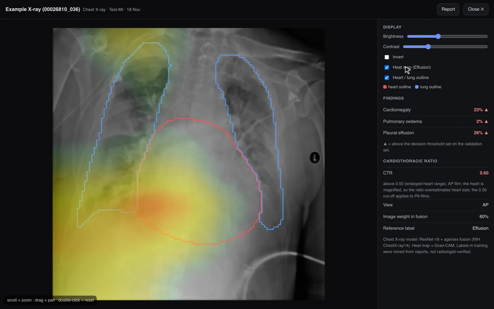
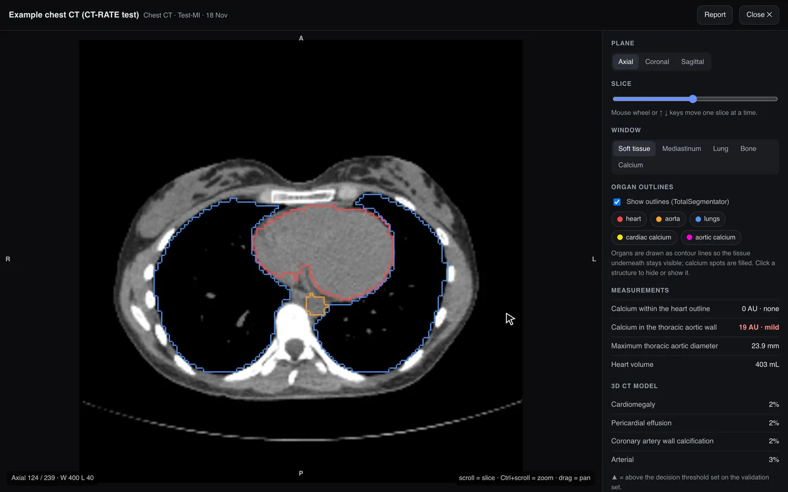
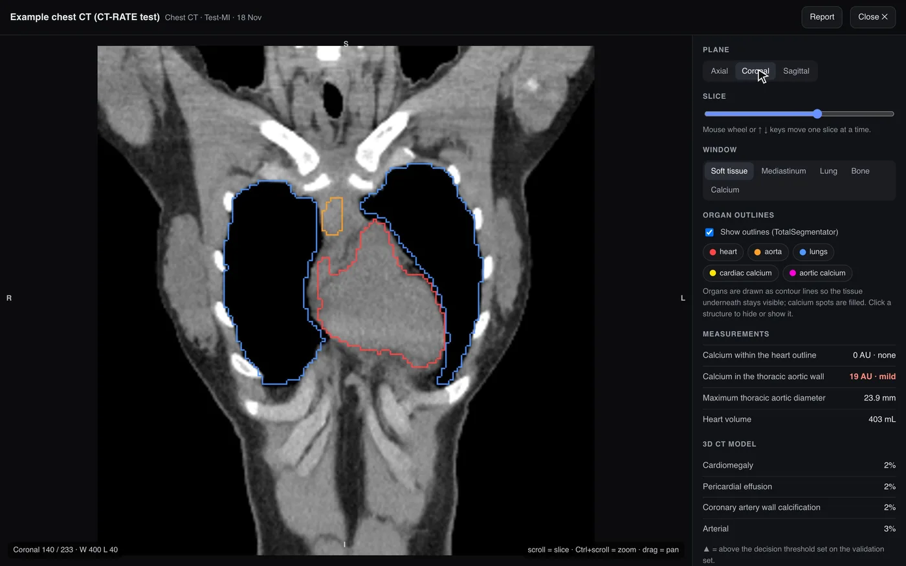
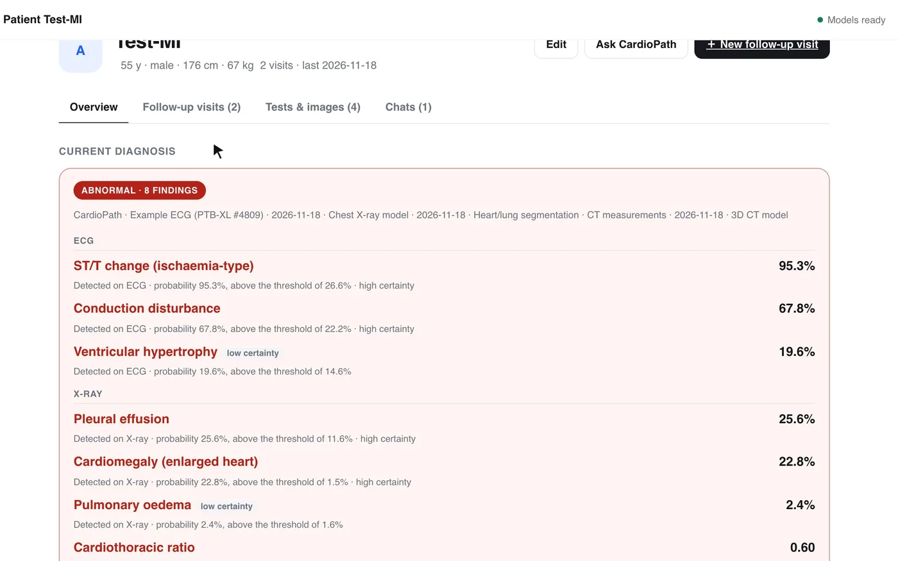

Home / World Models
Research project · Medical AI
World Models for Medical AI
A world model learns how something changes over time, so it can predict what comes next. My project, CardioPath, applies this to the heart: it reads a patient’s ECG, chest X-ray and CT, and forecasts how their ECG findings are likely to change over the next two years.
How my model works
- 01Read each testSeparate networks read the 12-lead ECG, the chest X-ray and the chest CT.
- 02Build a patient stateThe ECG is turned into a compact latent state that summarises the patient’s heart.
- 03ForecastA learned transition moves that state forward to predict each ECG finding at 1, 3 and 6 months, 1 and 2 years.
- 04Check and explainEvery result has a certainty check, a novelty warning and a map showing where the model looked.
View the full design diagram
1 Read each kind of patient data
- 12-lead ECG1D ResNet
- Chest X-rayResNet-18 / U-Net
- 3D CT scanTotalSegmentator + 3D ResNet
- Clinical risk factorscalibrated gradient boosting
Each data type has its own encoder. Trained on six public cohorts with patient-wise splits.
2 Combine into one patient state
3 Simulate what happens next
4 Explain, then check the explanation
fails → fixed, rule-based text (no made-up clinical claims)
See it working
Read the on-screen text
CardioPath: a cardiovascular world model, developed by Md. Mehedi Hassan under the supervision of Professor Shariful Islam at Texas Tech University.
CardioPath reads a 12-lead ECG and reports the current findings. Each statement is linked to its source.
The ECG world model projects every finding forward in time, from one month to two years, with uncertainty across three models.
Attention maps show which parts of the tracing drove each finding.
For each patient, findings from the ECG, chest X-ray and CT are combined into one current diagnosis.
The record tracks 10-year cardiovascular risk, estimates the effect of treatment, and forecasts each ECG condition up to two years ahead.
Follow-up visits are kept on a timeline, with the measurements, tests and findings from each visit.
All tests and images are organised by visit.
On the chest X-ray, the model outlines the heart and lungs, measures the cardiothoracic ratio, and highlights the region behind each finding.
On chest CT, organ outlines, calcium scores and aortic measurements are shown in the axial, coronal and sagittal planes.
What it analyses






The math, in brief
- Encode today’s ECG xt into a latent state.
- Move the state forward by Δ (1 month to 2 years), using up to 15 earlier ECGs ht. Learned from 410,691 ECGs.
- Turn the future state into the probability of each finding k, averaged over 3 models.
Results
| Test | AUROC |
|---|---|
| Reading today’s ECG (PTB-XL, 2,158 ECGs) | 0.941 |
| Forecasting the next ECG (87,232 held-out ECG pairs) | 0.846 |
| Baseline: assuming the ECG will not change | 0.811 |
| Full world model, with machine measurements | 0.865 |
Higher is better; 1.0 is perfect.
Try it
The live demo runs on my own computer through a temporary link, so it may be offline or its address may change; it is not guaranteed to be available. If it does not open, email me.